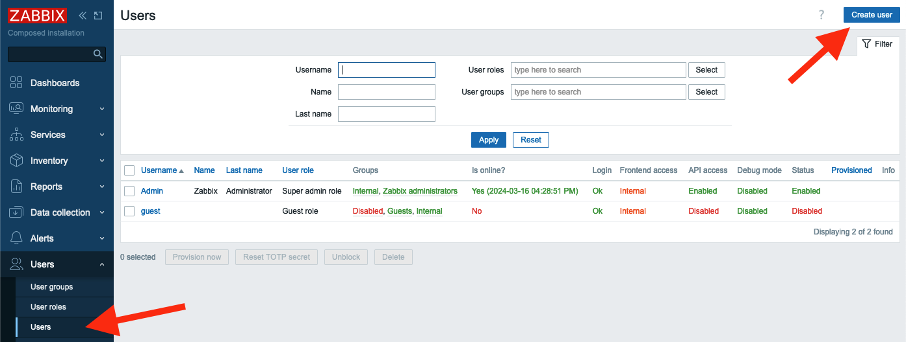
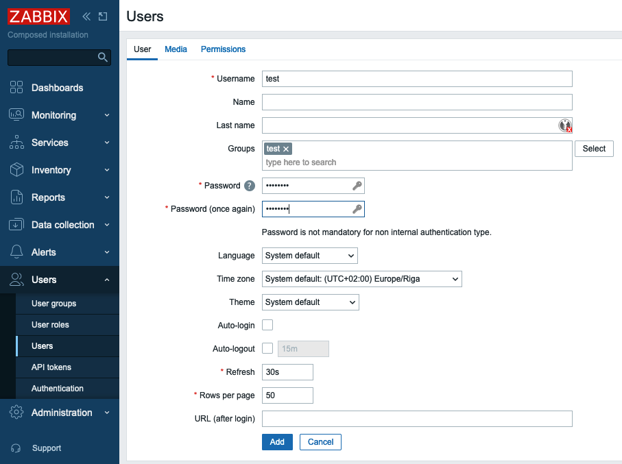
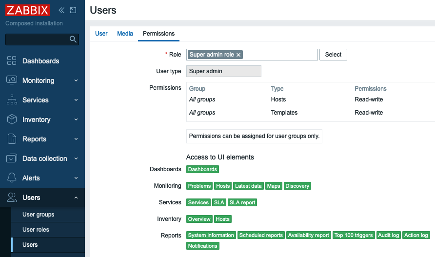
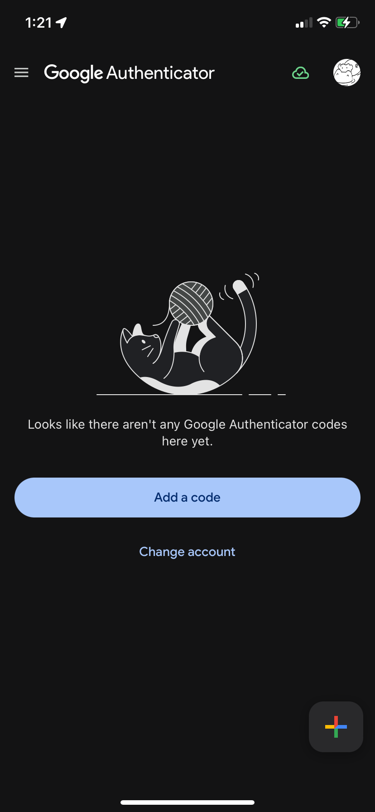
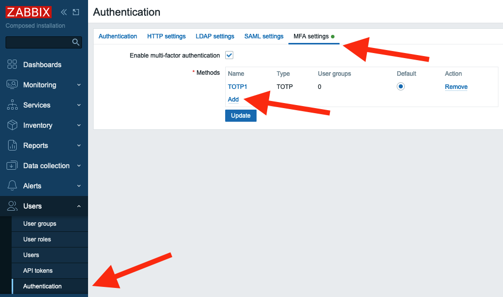
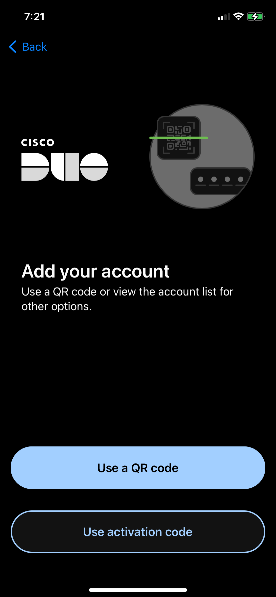
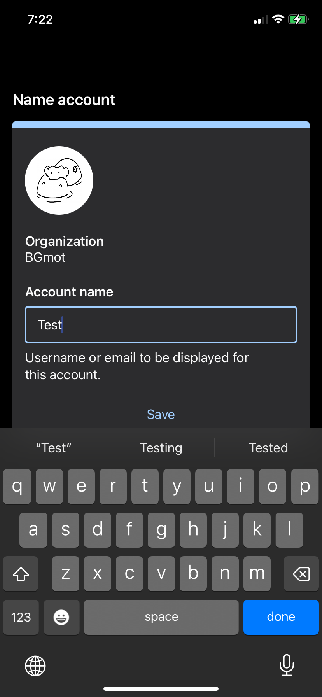
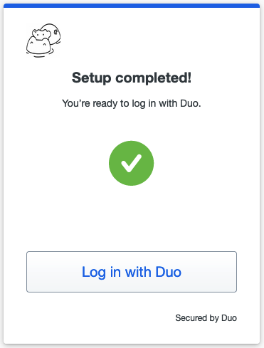

Meervoudige verificatie
We weten allemaal dat je moet inloggen voordat je Zabbix kunt configureren via WebUI. Zabbix heeft verschillende opties om gebruikerswachtwoorden beter te beveiligen door het wachtwoordbeleid te configureren:
- Vereiste voor minimale wachtwoordlengte
- Vereisten voor wachtwoord om een hoofdletter en een kleine Latijnse letter, een cijfer, een speciaal teken te bevatten
- Requirement to avoid easy-to-guess passwords
To secure sign in process even more you can configure multi factor authentication (MFA). MFA protects Zabbix by using a second source of validation before granting access to its WebUI after a user enters his/her password correctly. Zabbix offers to types of MFA - Time-based one-time password (TOTP) and Duo MFA provider.
Time-based one-time password
In the menu select Users section and then Authentication

2.20 Initial MFA settings
Now in MFA settings tab select the Enable multi-factor authentication
check-box, then select TOTP in Type drop-down list.

2.21 New MFA method
In Hash function drop-down list you can choose SHA-1, SHA-256 or SHA-512, the
higher number is the better security.
In Code lentgh you can select how many digits will be generated for you by
Authenticator application on your phone.
Click Add and then Update. Now you have TOTP MFA configured and it is the
default method of MFA.
 {
width=90% }
{
width=90% }
2.22 New MFA method added
Now you need to tell Zabbix for which User group (or groups) to use MFA. Let's create a User group that would require MFA.
In the menu select Users section and then User groups, then click Create
user group button

2.23 Create user group
In Group name put "test". Note that Multi-factor authentication field is
"Default", as currently we have only one MFA method configured it does not
matter whether we select "Default" or "TOTP1" that we created above. You also
can disable MFA for all users belonging to this User group. Click Add button
to create "test" User group.

2.24 New user group configuration
Note
MFA method is defined on per User group basis, i.e. MFA method configured for a User group will be applied to all users belonging to this group.
Let's add a user to this user group. In the menu select Users section and then
Users, then click Create user button

2.25 Create user
Fill in Username, Password and Password (once again) fields. Make sure you
select test user group in Groups field.

2.26 New user configuration
Then switch to Permissions tab and select any role.

2.27 New user permissions
Click Add button to add the user.
Now we can test how TOTP MFA works. Sign out and then try to sign in as a test
user you just created. You will be presented with a QR code. That means that the
user test has not been enrolled in TOTP MFA yet.

2.28 TOTP QR code
On your phone you need to install either "Microsoft authenticator" or "Google
authenticator" application. The procedure of adding new QR code is quite
similar, here is how it looks in "Google authenticator". Tap Add a code and
then Scan a QR code. You'll be immediately presented with a 6 digit code
(remember we selected 6 in Code length when we configured TOTP MFA?)

2.29 Authenticator app, step 1

2.30 Authenticator app, step 2

2.31 Authenticator app, step 3
Enter this code into Verification code field of your login screen and click
Sign in, if you did everything right you are logged in into Zabbix at this
point. At this point the user "test" is considered enrolled into TOTP MFA and
Zabbix stores a special code used for further authentications in its database.
The next time user "test" tries to login into Zabbix there will be only a field
to enter verification code

2.32 Verification code request
Warning
For TOTP MFA to work your Zabbix server must have correct time. Sometimes it's not the case especially if you are working with containers so pay attention to this.
If a user changes (or loses) his/her phone, then Zabbix administrator should
reset his/her enrolment. To do that in the menu select Users then mark a
check-box to the left of "test" user and click "Reset TOTP secret" button.

2.33 Reset TOTP secret
After you reset TOTP secret the "test" user will have to undergo enrolment procedure again.
Duo MFA provider
Duo is a very famous security platform that provides a lot of security related features/products. To read more please visit Duo. Here we'll talk about Duo only in regards to Zabbix MFA.
Warning
For Duo MFA to work your Zabbix WebUI must be configured to work with HTTPS (valid certificate is not required, self-signed certificate will work).
First of all you need to create an account with Duo (it's free to manage up to
10 users) then login into Duo, you are an admin here. In the menu on the left
select Applications and click Protect an Application button.

2.34 DUO Applications menu
Then you will see WebSDK in applications list, click on it

2.35 DUO Applications list
Here you'll see all the data needed for Zabbix.

2.36 DUO WebSDK application settings
Now let's go to Zabbix. First we need to configure Duo MFA method. In the menu
select Users and click Authentication. Then on MFA settings tab click
Add in Methods section.

2.37 Add MFA method
Fill in all the fields with data from Duo Dashboard -> Applications -> Web SDK
page (see screenshot above) and click Add, then click Update to update
Authentication settings.

2.38 DUO method settings
After the MFA method is configured let's switch the "Test" group to use Duo MFA.
In the menu select Users and click User groups, then click "test" group. In
the field Multi-factor authentication select "DUO1" and click Update.

2.39 DUO MFA authentication method for user group
Everything is ready. Let's test it. Sign out of Zabbix and sign back in with
"test" user. You should see a welcome screen from Duo. Click several Next
buttons.

2.40 Enrolling into DUO, step1

2.41 Enrolling into DUO, step2

2.42 Enrolling into DUO, step3
Then you need to select the method of authentication.

2.43 Enrolling into DUO, step4
It is up to you what to select you can experiment with all these methods. Let's
select "Duo Mobile" (you need to install "Duo mobile" application on your
device). Click I have a tablet (it's just easier to activate your device this
way) and confirm that you installed "Duo mobile" on your phone. At this point
you should see a QR code that you need to scan in "Duo mobile" application.

2.44 Enrolling into DUO, step5

2.45 Enrolling into DUO, step6

2.46 Enrolling into DUO, step7
Open "Duo mobile" on your phone. If you did not have this application previously installed (thus no accounts enrolled) you will see couple of welcome screens.

2.47 Configure DUO app, step 1

2.48 Configure DUO app, step 2
Tap on "Use a QR code" and then scan the code presented by Duo in your Zabbix login screen. After you do that you will see that the account is enrolled to your Duo MFA. Enter account name and tap "Done" and you will see the account in the list of all accounts enrolled into Duo MFA on this device. In Zabbix WebUI you will also see a confirmation, click "Continue".

2.49 Configure DUO app, step 3

2.50 Configure DUO app, step 4

2.51 Enrolment confirmation
Duo will ask you now whether you want to add another method of authentication,
click Skip for now and you'll see a confirmation that set up completed. Click
Login with Duo and a notification will be pushed to your device.
2.52 Add another way to login

2.53 MFA DUO set up completed

2.54 DUO push notification sent
Now just tap on "Approve" on your device and you will be logged in into Zabbix.

2.55 DUO push notification on the phone
Duo MFA enrolment complete. If you sign out and sign in back then immediately a push notification will be sent to your device and all you need is tap on "Approve". Also you will see the user "test" in Duo where you can delete the user, or deactivate just click on it and experiment.

2.56 New user registered in DUO
Conclusie
Implementing Multi-Factor Authentication (MFA) in Zabbix is a powerful way to significantly advance your system’s security beyond the standard password policies. This chapter outlined how Zabbix supports two robust MFA mechanisms:
-
Time Based One-Time Password (TOTP): Offers user-friendly, secure login via an authenticator app (like Google or Microsoft Authenticator). It's easy to configure and effective just ensure that your Zabbix server maintains accurate time settings to avoid authentication issues.
-
Duo MFA: Integrates a more advanced, enterprise grade solution that provides features like push notifications and customizable authentication methods. Duo offers flexible and strong security, albeit requiring a bit more setup (including HTTPS on the Zabbix WebUI).
Both MFA options elevate the login process by introducing an additional layer of validation. Administrators can apply MFA selectively by assigning it to specific user groups thus tailoring the security posture to organizational needs.
Ultimately, enabling MFA not only enhances protection against unauthorized access but also fits within a broader strategy of robust authentication. Whether through TOTP or Duo, adding MFA demonstrates a commitment to safeguarding access to your Zabbix environment and fortifying your monitoring infrastructure.n
Vragen
-
Why is relying on a password alone not sufficient to secure access to a Zabbix instance? (Think about common attack methods like password reuse, brute force, or phishing.)
-
What are the key differences between TOTP-based MFA and Duo MFA in terms of setup, security, and user experience?
-
How does accurate system time affect the reliability of TOTP authentication, and what could go wrong if time synchronization is not maintained?
-
If you were tasked with enabling MFA for a production Zabbix system, which method (TOTP or Duo) would you choose, and why? (Consider factors such as environment size, user skill level, regulatory requirements, and available resources.)
-
What are some potential challenges when rolling out MFA in an organization, and how could an administrator mitigate user resistance or technical issues?
-
Why might it be useful to enable MFA only for certain user groups in Zabbix rather than enforcing it globally?
-
How does adding MFA to Zabbix align with a broader security strategy, and what other complementary security measures should be considered?
Nuttige URL's
https://www.zabbix.com/documentation/current/en/manual/web_interface/frontend_sections/users/authentication/mfa https://duo.com/docs/sso-zabbix